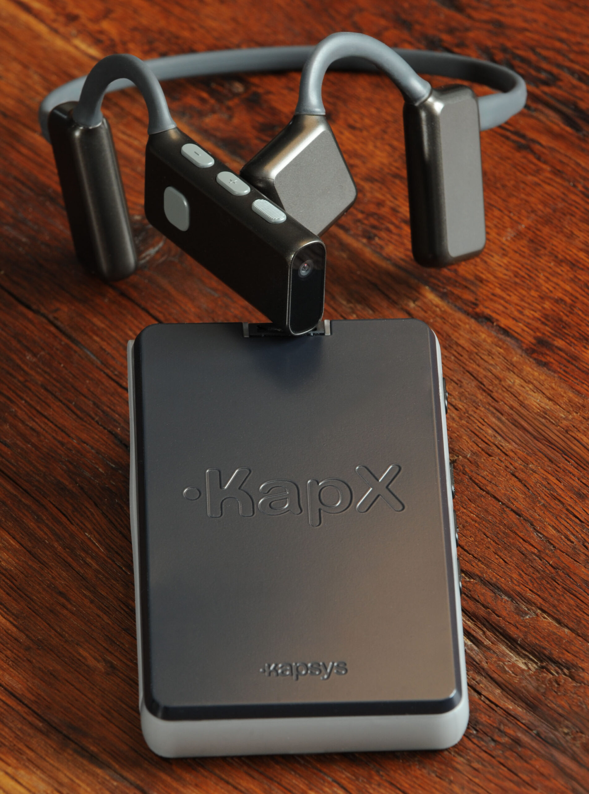
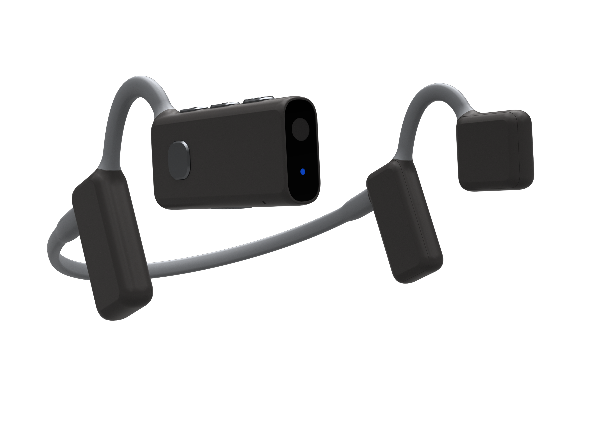
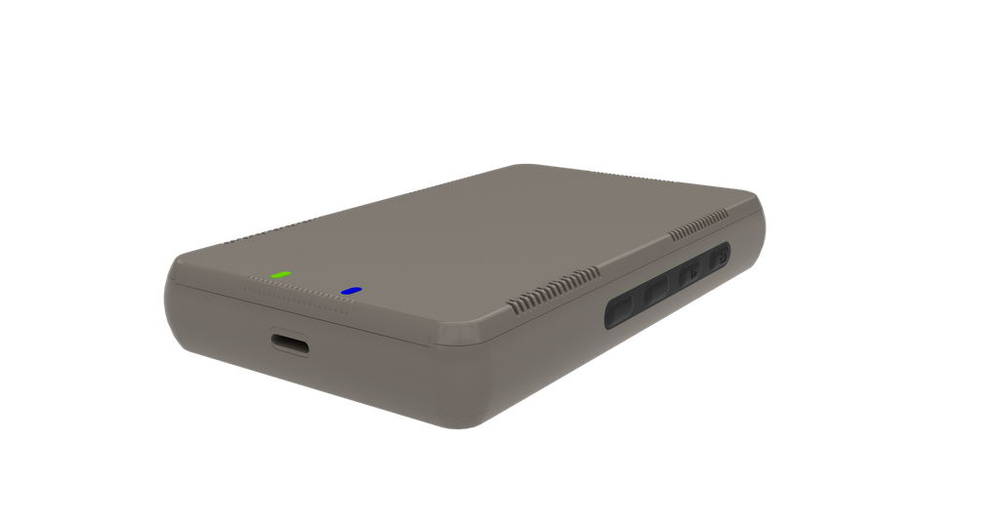
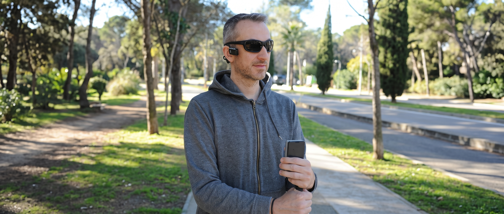
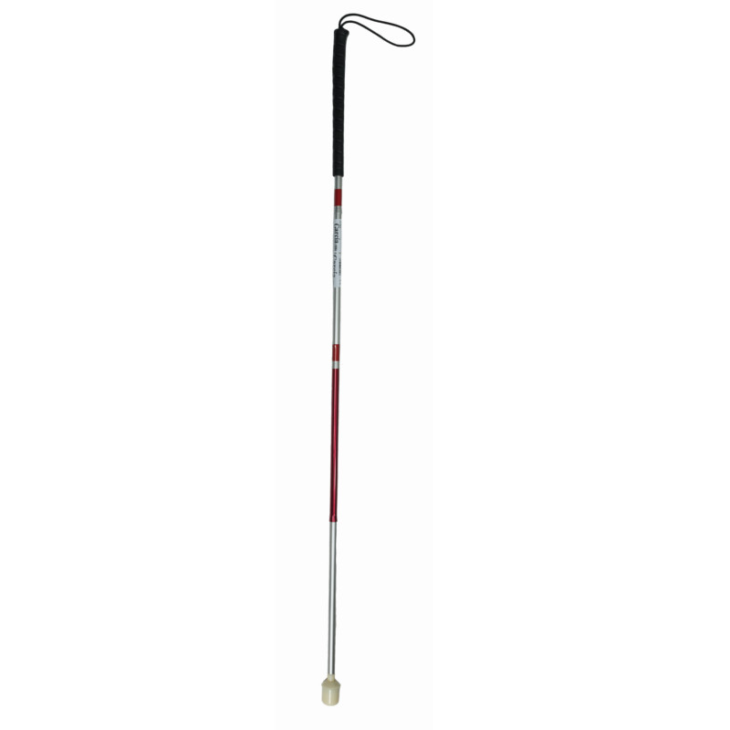
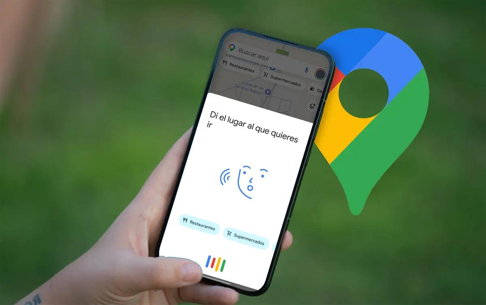
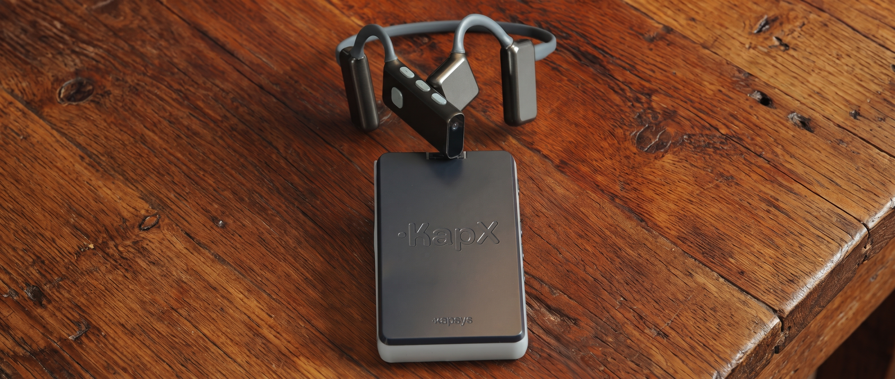

Reconocimiento del terreno
Distingue por dónde se está caminando y avisa de elementos útiles del camino. Por ejemplo, ayuda a mantenerse en la acera, a notar que se llega a un paso de peatones o a no invadir un carril bici sin darse cuenta.
01 / TECNOLOGÍA Y ACCESIBILIDAD
Lanzado oficialmente el 26 de junio de 2026 por la compañía francesa KAPSYS, KapX es un asistente tecnológico diseñado específicamente para personas con discapacidad visual, y compatible con el uso del bastón blanco.
El producto está compuesto por dos elementos hardware complementarios: una diadema electrónica ultraligera colocada en la cabeza con cámara frontal de 100° de visión, y una unidad de control de bolsillo que procesa el entorno de forma local.
A través de la cámara frontal, KapX analiza y reconstruye el entorno en 3D para detectar obstáculos a la altura del cuerpo y anticipar riesgos hasta 10 metros de distancia.
El dispositivo no requiere conexión a internet, ya que el procesamiento se realiza íntegramente en la unidad de control. Además, ofrece una autonomía de hasta 4 horas e incorpora Bluetooth para conectarse al móvil.
He elegido KapX porque es un buen ejemplo de IPO aplicada a la accesibilidad al mostrarnos cómo la tecnología puede adaptarse a las necesidades de las personas con discapacidad visual y comunicarles información compleja en tiempo real sin el uso de pantallas.
A diferencia de aplicaciones móviles, se trata de una solución hardware específica que aporta beneficios reales: traslada la interacción al sonido espacial 3D, protege frente a diferentes obstáculos, y permite una mayor autonomía en el desplazamiento.

02 / RELACIÓN CON IPO
En cuanto a la interacción persona-ordenador (IPO), KapX plantea una comunicación que no depende de la vista: en lugar de una pantalla, reparte la interacción entre el tacto, la voz y el oído, de modo que el usuario puede controlarlo y recibir información mientras camina.


03 / BENEFICIOS
KapX está pensado para facilitar los desplazamientos de las personas con discapacidad visual, ofreciendo información adicional sobre lo que ocurre a su alrededor:
Distingue por dónde se está caminando y avisa de elementos útiles del camino. Por ejemplo, ayuda a mantenerse en la acera, a notar que se llega a un paso de peatones o a no invadir un carril bici sin darse cuenta.
Analiza lo que hay delante hasta 10 metros y propone un camino libre. Está pensado para elementos que se encuentran a la altura del cuerpo, como una persona parada, una mesa de terraza o una moto aparcada en la acera.
Se conecta por Bluetooth al teléfono, de modo que se puede llamar, escuchar música o seguir la ruta del GPS habitual sin auriculares aparte. Las manos quedan libres para llevar el bastón.

04 / EVOLUCIÓN
Las tecnologías de apoyo para invidentes han ido incorporando nuevas formas de detectar obstáculos y conocer el entorno. Desde la exploración mediante el bastón blanco hasta los sistemas electrónicos y la visión artificial:
01 · DETECCIÓN POR CONTACTO
Detecta desniveles y obstáculos tocando directamente el suelo a un metro de distancia. Sigue siendo una herramienta fundamental para la movilidad, aunque dependa del alcance del bastón.

02 · ORIENTACIÓN Y SENSORES ELECTRÓNICOS
El GPS proporciona indicaciones de calles y los sensores avisan al acercarse a determinados obstáculos, pero sin identificar el tipo de objeto ni saber si el suelo es una acera o una calzada.

03 · VISIÓN ARTIFICIAL Y SONIDO 3D (2026)
Analiza el entorno y lo reconstruye en un espacio 3D. Reconoce elementos concretos del entorno y los sitúa mediante el sonido en el espacio real tridimensional, complementando las herramientas tradicionales.

05 / MÁS INFORMACIÓN
Consulta las especificaciones técnicas completas y el comunicado oficial de lanzamiento en la web de KAPSYS:
KapX se lanzó en junio de 2026, por lo que la documentación disponible procede principalmente del propio fabricante.